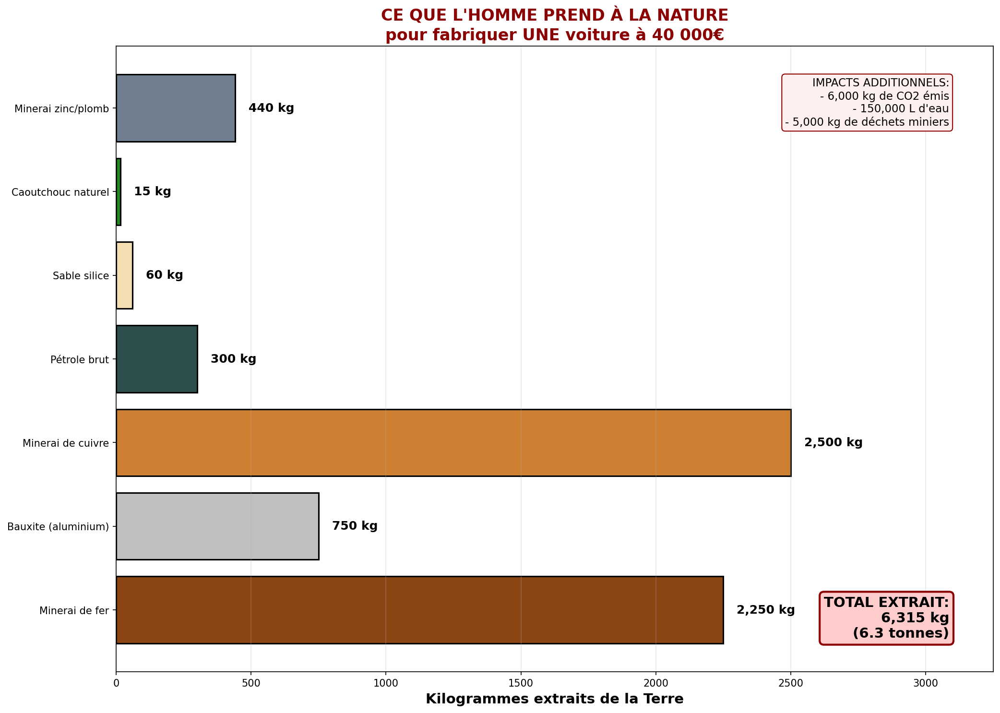
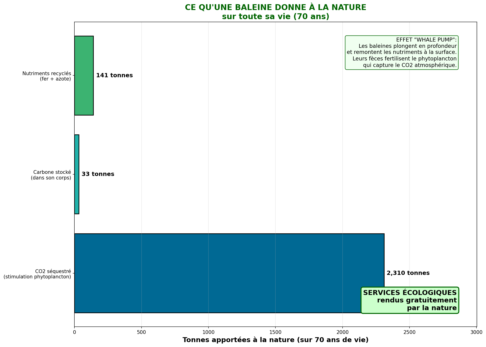
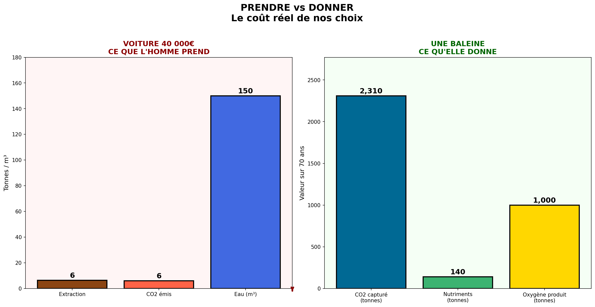
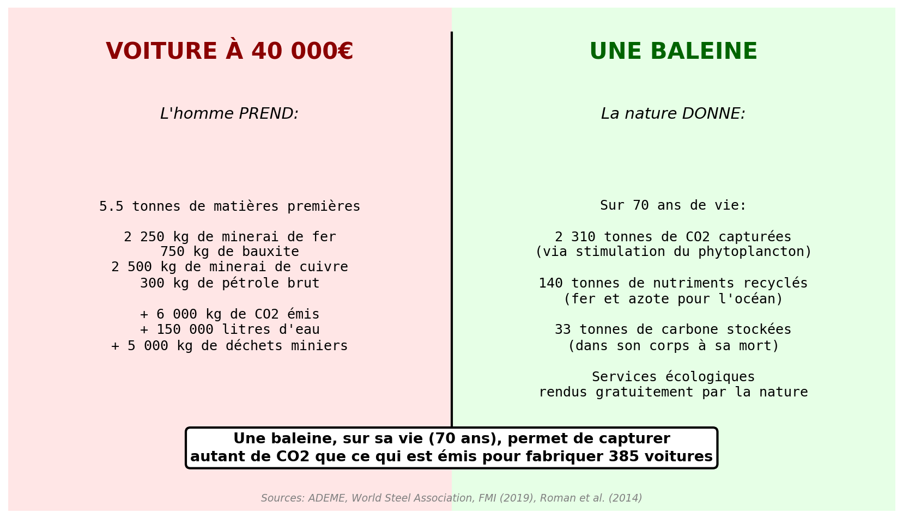

Comparaison ecologique : ce qu'on detruit vs ce qu'on protege
Janvier 2026
Nous fabriquons des voitures en detruisant des ecosystemes, tout en ignorant les services ecologiques gratuits rendus par la nature. Cette etude compare le cout ecologique d'une voiture avec les benefices d'une baleine.
Fabriquer une voiture necessite d'extraire des quantites massives de matieres premieres, avec des ratios d'extraction souvent meconnus.

Sources : World Steel Association, USGS, ADEME
| Materiau | Quantite/voiture | Ratio extraction | Minerai extrait |
|---|---|---|---|
| Acier | 900 kg | 2.5:1 | 2 250 kg |
| Aluminium | 150 kg | 5:1 | 750 kg |
| Cuivre | 25 kg | 100:1 | 2 500 kg |
Les baleines rendent des services ecosystemiques essentiels, totalement gratuits.

Sources : IMF (2019), Pershing et al. (2010), Roman & McCarthy (2010)
| Service | Valeur |
|---|---|
| Carbone stocke (corps) | 33 tonnes par baleine |
| CO2 capture (vie entiere) | 2 310 tonnes |
| Valeur economique estimee | 2 millions USD |
| Stimulation phytoplancton | Effet multiplicateur |

Comparaison directe des impacts

Vue synthetique de la comparaison